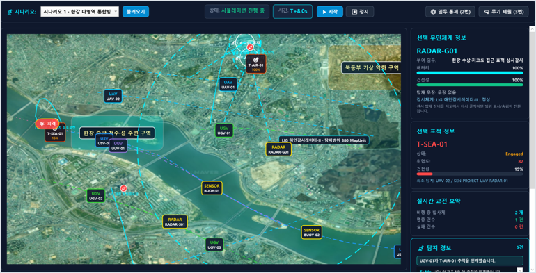

SYSTEM SOFTWARE, COMMAND AND CONTROL
MOSAIC C2 지휘통제 시뮬레이터
공중, 수상, 수중, 지상 무인체계의 탐지부터 대응수단 선정, 명령, 발사, 명중과 재교전까지 하나의 시간축에서 검증한 WPF 기반 시뮬레이터.

01 / SYSTEM
시스템 구조와 담당 범위
외부 JSON으로 자산, 센서, 무장과 시나리오를 정의하고, 0.1초 주기의 엔진이 각 자산의 상태를 갱신한다. 탐지 결과가 들어오면 가용 플랫폼과 무장을 평가해 명령을 만들고, 발사체 비행과 명중 판정까지 이어지도록 구현했다.
- 시뮬레이션 엔진시간 진행, 자산 이동, 탐지, 교전, 피해 상태 갱신
- 대응수단 추천영역, 사거리, 잔탄, 통신, 위협도 조건을 점수화
- 데이터 분리무장, 센서, 플랫폼, 시나리오를 JSON으로 관리
- 운용 화면지도, 선택 자산 제원, 교전 요약, 이벤트 로그 동기화
02 / EXECUTION
자동 대응이 실제로 이어지는 과정

03 / MODELING
무기와 센서 제원을 실행 변수로
LIG 계열 유도무기와 감시체계의 공개 제원을 학습하고, 사거리, 명중확률, 잔탄, 대응 가능 영역을 JSON 속성으로 구성했다. 레이더 탐지범위도 시나리오 규모에 맞춘 근사값으로 설정해 지도 위 범위와 추천 판단이 같은 데이터를 사용하도록 했다.
무장
대응 영역, 사거리, 명중확률, 잔탄과 재교전 가능 여부
센서
탐지 영역, 범위, 통신 상태와 표적 탐지 결과
플랫폼
공중, 수상, 수중, 지상별 이동 제약과 탑재 무장
시나리오
표적 출현, 통신 두절, 기동, 교전 이벤트의 시간 조건
04 / DECISION
판단 로직
통신 계층 분리
플랫폼 통신은 추천 점수에 반영하고 지휘통신 링크는 명령 보류와 재전송 조건으로 처리했다.
재교전 재평가
이전 플랫폼에 고정하지 않고 잔존 표적의 건전성과 모든 가용 수단을 다시 평가했다.
영역 제약 기동
UAV는 직선, USV와 UUV는 수로, UGV는 도로 경로망을 따라 이동하도록 분리했다.
실행 전 검증
ID 고유성, 참조 정합성, 좌표 범위, 경로망 영역과 화면 구조를 먼저 검사했다.
05 / SCENARIOS
검증 시나리오